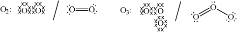

HL Paper 3
The discovery of penicillin was one of the most significant scientific discoveries of the last century.
State the type of hybridization of each of the carbon atoms (I, II, and III) in the \(\beta \)-lactam ring of ampicillin by completing the table below, and explain why the amide group is highly reactive.

Markscheme
 ;
;
strain in four-membered ring / as angles less than 109°;
Examiners report
In (c), many students could not relate the hybridization of the carbon atoms in the beta-lactam ring to ring strain and a significant number appear to have difficulty linking some key chemical concepts in this option.
Ozone prevents UV radiation emitted from the Sun reaching the surface of the Earth.
Explain, with the aid of Lewis (electron-dot) structures, the difference between oxygen and ozone in terms of the energy required to dissociate both molecules.
Oxygen: Ozone:
One CFC, Freon-13 (chlorotrifl uoromethane), which can be used as a refrigerant, has been phased out by the Montreal Protocol. Describe, using equations, the mechanism of the catalysis of ozone depletion by this particular CFC.
Markscheme
Oxygen: correctly drawn Lewis structure and Ozone: correctly drawn Lewis structure;

Allow any combination of dots, x’s or lines to represent electron pairs.
Allow representation of two resonance structures for ozone.
oxygen has a higher bond order than ozone and oxygen needs more energy to dissociate / OWTTE;
Exact bond orders of 2 for oxygen and 1.5/1 and 2 for ozone may be given for first statement in M2.
Do not award M2 if incorrect bond orders are stated for either species.
\({\text{C}}{{\text{F}}_{\text{3}}}{\text{Cl (}} + {\text{UV/}}hf{\text{/}}hv{\text{)}} \to {\text{C}}{{\text{F}}_{\text{3}}} \bullet + {\text{Cl}} \bullet \);
\({\text{Cl}} \bullet + {{\text{O}}_3} \to {\text{ClO}} \bullet + {{\text{O}}_2}\);
\({\text{ClO}} \bullet + {{\text{O}}_3} \to {\text{Cl}} \bullet + {\text{2}}{{\text{O}}_2}\);
Accept \(ClO \bullet + O \bullet \to {O_2} + Cl \bullet \) for M3.
Allow representation of radicals without \( \bullet \) if consistent throughout.
Penalize inconsistency of radical representations once only in E16.
Examiners report
(a) and (b) were well answered though the weaker students in (b) simply stated that \({{\text{C}}_{\text{2}}}{{\text{F}}_{\text{6}}}\) contains no chlorine – no credit was awarded for this. (c) (i) was generally well done though temperature inversion often was not correctly described. Part (ii) was very poorly answered and most only scored one mark. PANs continue to be a real challenge for candidates and similar to previous examination papers candidate performance here was very poor. In (d) the most common mistake was the sight of two lone pairs instead of one on the central oxygen in ozone. (e) was well done however, though some inconsistency of radical symbols was common.
(a) and (b) were well answered though the weaker students in (b) simply stated that \({{\text{C}}_{\text{2}}}{{\text{F}}_{\text{6}}}\) contains no chlorine – no credit was awarded for this. (c) (i) was generally well done though temperature inversion often was not correctly described. Part (ii) was very poorly answered and most only scored one mark. PANs continue to be a real challenge for candidates and similar to previous examination papers candidate performance here was very poor. In (d) the most common mistake was the sight of two lone pairs instead of one on the central oxygen in ozone. (e) was well done however, though some inconsistency of radical symbols was common.
The following reactions take place in the ozone layer by the absorption of ultraviolet light.
\[\begin{array}{*{20}{l}} {\text{I}}&{{{\text{O}}_3} \to {{\text{O}}_2} + {\text{O}} \bullet } \\ {{\text{II}}}&{{{\text{O}}_2} \to {\text{O}} \bullet + {\text{O}} \bullet } \end{array}\]
State and explain, by reference to the bonding, which of the reactions, I or II, requires a shorter wavelength.
CFCs and \({\text{N}}{{\text{O}}_{\text{x}}}\) are pollutants responsible for the depletion of the ozone layer. Discuss the role of \({\text{N}}{{\text{O}}_{\text{x}}}\) in this process and include equations for a stepwise mechanism.
Markscheme
reaction II (requires a shorter wavelength);
\({{\text{O}}_{\text{2}}}\) has double bond/bond order 2 and \({{\text{O}}_{\text{3}}}\) intermediate between double and single bonds/bond order of \({\text{1}}\frac{1}{2}\);
Do not accept stronger/weaker bonding without justification for the second marking point.
NO/\({\text{N}}{{\text{O}}_{\text{x}}}\)/\({\text{N}}{{\text{O}}_{\text{2}}}\) act as catalysts;
\({\text{NO}} + {{\text{O}}_3} \to {\text{N}}{{\text{O}}_2} + {{\text{O}}_2}\);
\({\text{N}}{{\text{O}}_2} + {\text{O}} \to {\text{ NO}} + {{\text{O}}_2}\);
Examiners report
In (a) most candidates stated the reaction and identified the double bond in oxygen, but very few mentioned the bond order of 1 1/2 for the ozone molecule.
In (b), very few candidates answered correctly to score the three marks and did not recognise the role of \({\text{N}}{{\text{O}}_{\text{x}}}\) as a catalyst.
Increasing concentrations of greenhouse gases are considered to cause global warming. Ozone depletion is another environmental concern.
Ozone and oxygen are in equilibrium in the stratosphere. Both gases absorb ultraviolet radiation and dissociate producing oxygen atoms.
Describe the dependence of ozone and oxygen dissociation on the wavelength of radiation absorbed, and explain how this is related to the bonding in each molecule.
Markscheme
ozone depletion requires higher wavelength / oxygen dissociation requires lower wavelength;
M1 must refer to wavelength.
wavelength inversely proportional to energy / wavelength increases as energy decreases;
oxygen has double bond/bond order of 2 and ozone has bond order of 1.5/intermediate bond between single and double;
Stating that ozone has resonance or delocalization alone is not sufficient.
ozone weaker bond / O–O bond energy in ozone lower;
Accept opposite argument of oxygen for M4.
Examiners report
(c) was well answered.
Ozone and oxygen both dissociate in the ozone layer when they absorb ultraviolet light of different wavelengths.
\({{\text{O}}_3}{\text{(g)}} \to {{\text{O}}_2}{\text{(g)}} + {\text{O}} \bullet {\text{(g)}}\) \(\lambda = 330{\text{ nm}}\)
\({{\text{O}}_2}{\text{(g)}} \to {\text{O}} \bullet {\text{(g)}} + {\text{O}} \bullet {\text{(g)}}\) \(\lambda = 242{\text{ nm}}\)
Explain, on a molecular level, why ozone dissociates with radiation of a longer wavelength than oxygen.
Nitrogen(II) oxide, NO, is a primary pollutant that depletes the ozone layer. State two equations that show how this oxide catalyses the depletion of ozone in the stratosphere.
Markscheme
\({{\text{O}}_{\text{3}}}\) needs less energy/has weaker bonding/has lower bond enthalpy;
Accept converse argument for \({O_2}\).
\({{\text{O}}_{\text{3}}}\) has bond order 1.5/intermediate between double and single and \({{\text{O}}_{\text{2}}}\) has bond order 2/double bond;
\({\text{NO}} \bullet {\text{(g)}} + {{\text{O}}_3}{\text{(g)}} \to {\text{N}}{{\text{O}}_2} \bullet {\text{(g)}} + {{\text{O}}_2}{\text{(g)}}\);
\({\text{N}}{{\text{O}}_2} \bullet {\text{(g)}} + {\text{O}} \bullet {\text{(g)}} \to {\text{NO}} \bullet {\text{(g)}} + {{\text{O}}_2}{\text{(g)}}\);
Accept “\(N{O_2} \bullet (g) + {O_3}(g) \to NO \bullet (g) + 2{O_2}(g)\)” for M2.
Accept NO, \(N{O_2}\) and O for radicals without \( \bullet \) if used consistently.
Accept equations with NO and \(N{O_2}\) written without \( \bullet \) but with \(O \bullet \) written.
Ignore state symbols.
Examiners report
Part (a) was very well done and it was nice to see reference to and discussion of bond order in many of the answers seen on scripts. In (b), few were able to give two correct equations. Inconsistency of the representation of radicals was seen on some scripts.
Part (a) was very well done and it was nice to see reference to and discussion of bond order in many of the answers seen on scripts. In (b), few were able to give two correct equations. Inconsistency of the representation of radicals was seen on some scripts.
The ozone layer protects us by absorbing ultraviolet (UV) radiation from the Sun during its natural formation and depletion.
Explain how the bonding in \({{\text{O}}_{\text{2}}}\) and \({{\text{O}}_{\text{3}}}\) affects the wavelengths of UV light they absorb.
The chemical balance of the stratosphere is disrupted by the presence of chlorofluorocarbons (CFCs) and other ozone-depleting compounds. Describe, using equations, how CFCs contribute to ozone depletion.
Markscheme
\({{\text{O}}_{\text{2}}}\) double bond and \({{\text{O}}_{\text{3}}}\) bond order 1.5/between single and double bond;
\({{\text{O}}_{\text{2}}}\) stronger/shorter / O3 weaker/longer bond;
\({{\text{O}}_{\text{2}}}\) absorbs shorter \(\lambda \) (242 nm) / \({{\text{O}}_{\text{3}}}\) absorbs longer \(\lambda \) (330 nm);
Initiation
\({\text{CC}}{{\text{l}}_2}{{\text{F}}_2}{\text{(g)}}\xrightarrow{{{\text{UV(light)/}}hv{\text{/}}hf}}{\text{ }} \bullet {\text{CCl}}{{\text{F}}_2}{\text{(g)}} + {\text{Cl}} \bullet {\text{(g)}}\);
Propagation
\({\text{Cl}} \bullet {\text{(g)}} + {{\text{O}}_3}{\text{(g)}} \to {\text{ClO}} \bullet {\text{(g)}} + {{\text{O}}_2}{\text{(g)}}\);
\({\text{ClO}} \bullet {\text{(g)}} + {\text{O}} \bullet {\text{(g)}} \to {{\text{O}}_2}{\text{(g)}} + {\text{Cl}} \bullet {\text{(g)}}\);
Accept for 2nd propagation step
\({\text{ClO}} \bullet {\text{(g)}} + {{\text{O}}_3}{\text{(g)}} + {\text{Cl}} \bullet {\text{(g)}} + {\text{2}}{{\text{O}}_2}{\text{(g)}}\).
Allow representation of the radical without \( \bullet \) if consistent throughout the mechanism.
Allow UV light to be represented above the arrow or mentioned in accompanying description as words.
Ignore state symbols.
Names of processes (initiation and propagation) not required.
Examiners report
There was a reasonable appreciation of the effect of \({{\text{O}}_{\text{2}}}\) and \({{\text{O}}_{\text{3}}}\) on UV light but the distinction between bond order 2 in \({{\text{O}}_{\text{2}}}\) and 1.5 in \({{\text{O}}_{\text{3}}}\) (or similar) was often not made. There were some good answers to (b) and most were consistent about the use of dots \({\text{(}} \bullet {\text{)}}\) to signify radicals. It is worth noting, however, that the question includes the words “using equations”. Candidates who did not use equations did not score any marks.
There was a reasonable appreciation of the effect of \({{\text{O}}_{\text{2}}}\) and \({{\text{O}}_{\text{3}}}\) on UV light but the distinction between bond order 2 in \({{\text{O}}_{\text{2}}}\) and 1.5 in \({{\text{O}}_{\text{3}}}\) (or similar) was often not made. There were some good answers to (b) and most were consistent about the use of dots \({\text{(}} \bullet {\text{)}}\) to signify radicals. It is worth noting, however, that the question includes the words “using equations”. Candidates who did not use equations did not score any marks.
The ozone in the stratosphere protects us from harmful UV radiation. Above Australia there is an area of decreased ozone concentration that has led to an increase in the incidence of some skin cancers.
Explain how the dissociation of \({{\text{O}}_{\text{2}}}\) and \({{\text{O}}_{\text{3}}}\) is dependent on the wavelength of light.
Use equations to describe the mechanism of ozone depletion catalysed by the \({\text{CC}}{{\text{l}}_{\text{2}}}{{\text{F}}_{\text{2}}}\) molecule.
Markscheme
\(\lambda = 242{\text{ nm}}\) / wavelength lower/frequency higher for \({{\text{O}}_2} \to {\text{2O}} \bullet \) /oxygen dissociation;
\(\lambda = 330{\text{ nm}}\) / wavelength higher/frequency lower for \({{\text{O}}_3} \to {{\text{O}}_2} + {\text{O}} \bullet \) /ozone dissociation;
the bonding in \({{\text{O}}_{\text{2}}}\) is stronger than in \({{\text{O}}_{\text{3}}}\);
\({\text{CC}}{{\text{l}}_2}{{\text{F}}_2} \to {\text{CCl}}{{\text{F}}_2} + {\text{Cl}} \bullet \);
\({\text{Cl}} \bullet + {{\text{O}}_3} \to {\text{ClO}} \bullet + {{\text{O}}_2}\);
\({\text{ClO}} \bullet + {\text{O}} \bullet \to {{\text{O}}_2} + {\text{Cl}} \bullet \);
Accept other suitable equations including CFC or Cl radicals.
\( \bullet \) not necessary for mark but if + or – used instead penalize once only.
Examiners report
In part (a) only the more able candidates were able to answer correctly. Few candidates quoted specific wavelengths or mentioned shorter or longer wavelengths. Many scored the mark for stronger bond in the oxygen molecule.
In (b) many candidates scored 1 or 2 points here, but only the more able candidates scored 3 marks by giving the three equations in the markscheme, with a wide range of implausible reactions appearing.
The ozone layer has also been depleted by certain pollutants that have been released into the atmosphere. State examples of two such ozone-depleting substances.
Markscheme
Chlorofluorocarbons/CFCs and oxides of nitrogen/\({\text{N}}{{\text{O}}_{\text{x}}}\).
Examiners report
Option E was one of the less popular options. In outlining the meaning of the term BOD, most candidates scored at least one mark out of two - typically the time and temperature condition - was not specified. Often in the reason why the concentration of dissolved oxygen falls, candidates did not identify aerobic respiration or decomposition of the organic matter by oxygen or that the increase in dissolved oxygen is from air. Graph for the effect of temperature on the concentration of dissolved oxygen was generally done well showing a line or a curve with a negative slope. Description of the physical and biological functions of SOM improve the quality of the soil was typically done well but answers revealed that the understanding of SOM is shallow with more sophisticated alternatives being rare.
In the question on \({K_{{\text{sp}}}}\) many candidates at least scored one mark from correctly stating the \({K_{{\text{sp}}}}\) expression with stronger candidates scoring fully. Deduction of the pH of aluminium hydroxide at the same pH and reduction of the toxicity of soil by increasing the pH shows a lack of understanding of key equilibrium and \({K_{{\text{sp}}}}\) concepts.
Although chemical equations that show the natural depletion of ozone were correct, some did not read the question carefully and stated the effect of CFCs on ozone depletion. Example of two ozone-depleting substances was well done; however, it is important to underline that often NO was presented rather than \({\text{N}}{{\text{O}}_x}\) or oxides of nitrogen. In the formation of ozone in smog, many candidates were able to state the reaction between the oxygen radical and oxygen molecule, but only a few candidates scored fully as a result of not starting from nitrogen(II) oxide as stated in the question.
Nuclear reactions transform one nuclide into another. Fission, splitting a large nucleus into two smaller nuclei, releases vast amounts of energy.
(i) Uranium hexafluoride, UF6, is used in the uranium enrichment process that produces fuel for nuclear reactors.
State the molecular shape of uranium hexafluoride.
(ii) Explain why uranium dioxide, UO2, has a very high melting point whereas uranium hexafluoride vapourises easily into gas.
Markscheme
i
octahedral
Accept “square bipyramidal”
ii
UO2 strong bonding throughout crystal structure
UF6 molecular «covalent bonds between atoms» AND London/dispersion/instantaneous induced dipole-induced dipole forces between molecules
Accept “UO2 has ionic lattice”
Examiners report
One of the winners of the 1995 Nobel Prize in Chemistry was Paul J. Crutzen, who showed that emissions of nitrogen oxides from jet airplanes could contribute to the destruction of the ozone layer.
Using chemical equations, outline a mechanism by which nitrogen oxides are able to deplete ozone.
Markscheme
\({\text{N}}{{\text{O}}_2} + {\text{hf}} \to {\text{NO}} + {\text{O}} \bullet \);
\({\text{NO}} + {{\text{O}}_3} \to {\text{N}}{{\text{O}}_2} + {{\text{O}}_2}\);
\({\text{N}}{{\text{O}}_2} + {\text{O}} \bullet \to {\text{NO}} + {{\text{O}}_2}\);
\({\text{O}} \bullet + {{\text{O}}_3} \to {\text{2}}{{\text{O}}_2}\);
No penalty for missing the free radical sign or using them on nitrogen oxides.
Accept other symbols in place of hf e.g. uv, h or light, in front of or above the arrow.
Examiners report
Many correct answers were seen for the outline of mechanism by which nitrogen oxides are able to deplete ozone, though rarely achieving full marks.
Chlorofluorocarbons, CFCs, deplete the ozone layer.
Chlorine atoms and nitrogen oxides react at the surface of ice particles in the arctic winter.
State the equations that represent the depletion of ozone in the stratosphere which is catalysed by chlorine free radicals.
(i) Deduce the type of catalysis that occurs.
(ii) Outline why the depletion of ozone is greatest during the arctic spring.
Markscheme
\({\text{Cl}} \bullet + {{\text{O}}_{\text{3}}} \to {\text{ClO}} \bullet + {{\text{O}}_{\text{2}}}\);
\({\text{ClO}} \bullet + {\text{O}} \bullet \to {\text{Cl}} \bullet + {{\text{O}}_{\text{2}}}\);
Radical symbols not required for mark.
(i) heterogeneous (catalysis);
(ii) ice particles melt releasing the pollutants;
light breaks the bonds producing radicals / Cl;
Examiners report
The equations for the depletion of ozone were correctly answered by few candidates. Instead of the catalysis being heterogeneous, some incorrectly identified heterolytic or homogeneous or surface catalysis.
Why in spring the depletion was greatest was not very well answered either.
Another major source of concern is the depletion of ozone in the stratosphere as a result of human activity.
Describe, by means of equations, how nitrogen(II) oxide, NO, catalyses the depletion of ozone.
Identify and state the source of one other ozone-depleting pollutant.
Markscheme
\({\text{NO(g)}} + {{\text{O}}_{\text{3}}}{\text{(g)}} \to {\text{N}}{{\text{O}}_{\text{2}}}{\text{(g)}} + {{\text{O}}_{\text{2}}}{\text{(g)}}\);
\({\text{N}}{{\text{O}}_2}{\text{(g)}} \to {\text{NO(g)}} + {\text{O}} \bullet {\text{(g)}}\);
\({\text{N}}{{\text{O}}_2}{\text{(g)}} + {\text{O}} \bullet {\text{(g)}} \to {\text{NO(g)}} + {{\text{O}}_2}{\text{(g)}}\);
\({\text{N}}{{\text{O}}_2}{\text{(g)}} + {{\text{O}}_3}{\text{(g)}} \to {\text{NO(g)}} + {\text{2}}{{\text{O}}_2}{\text{(g)}}\);
\({{\text{O}}_3}{\text{(g)}} + {\text{O}} \bullet {\text{(g)}} \to {\text{2}}{{\text{O}}_2}{\text{(g)}}\);
Accept representation of radicals without \( \bullet \) if consistent throughout.
Ignore state symbols.
chlorofluorocarbons/CFCs and
propellants in aerosol sprays/cans / (old) refrigerators / air conditioners / solvents / foaming agents/plastic foams / fire extinguishers;
Accept specific examples (eg, Freon/dichlorodifluoromethane/\(C{F_2}C{l_2}\) etc).
Examiners report
The relative strength of the bonds in oxygen and ozone was well known, along with the link between this and the frequency of radiation absorbed. Students were also very familiar with the sources of CFCs and the role of these in ozone depletion. The equations involved with the catalysis of ozone depletion by nitrogen(II) oxide were however a significantly greater challenge.
The relative strength of the bonds in oxygen and ozone was well known, along with the link between this and the frequency of radiation absorbed. Students were also very familiar with the sources of CFCs and the role of these in ozone depletion. The equations involved with the catalysis of ozone depletion by nitrogen(II) oxide were however a significantly greater challenge.